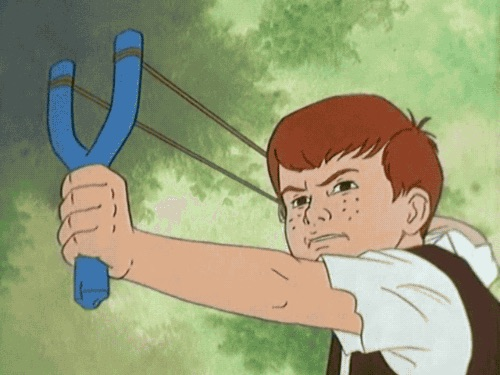

JavaScript Events
Events in JS, including those for Mobile Devices (onTouchStart, onLoad, etc.)
Click here for my GitHub repository.
1. Before doing anything else, we need to set up our event listeners.
The function shown below runs when the body HTML element has loaded, using the onload event.
function startup() {
// Slingshot--for onMouseDown, onMouseUp
document.getElementById("slingshot").onmousedown = function() {fireSlingshot()};
document.getElementById("slingshot").onmouseup = function() {reloadSlingshot()};
// Colored box, for onClick, onMouseOver, onMouseOut
// JS event listeners
makeBox();
document.getElementById("myCanvas").onmouseover = function() {colorBox('red')};
document.getElementById("myCanvas").onmouseout = function() {colorBox('green')};
// Register touch event handlers
document.getElementById('touch-canvas').addEventListener('touchstart',process_touchstart, false);
document.getElementById('touch-canvas').addEventListener('touchend', process_touchend, false);
} 2. Here's some code demonstrating an implementation of onMouseDown and onMouseUp.
// Slingshot--for onMouseDown, onMouseUp
function fireSlingshot(){
document.getElementById('slingshot').src ='slingshot-firing.jpg';
}
function reloadSlingshot(){
document.getElementById('slingshot').src = 'slingshot-pulling.jpg';
}Click the image! (won't work on mobile, sorry)
3. Code demonstrating onMouseOver, onMouseOut:
// Colored box, demonstrating onMouseOver and onMouseOut
function makeBox() {
var c=document.getElementById("myCanvas");
var ctx=c.getContext("2d");
ctx.rect(0,0,150,100);
ctx.stroke();
ctx.fillStyle = 'blue';
ctx.fill();
}
function colorBox(color){
var c=document.getElementById("myCanvas");
var ctx=c.getContext("2d");
ctx.fillStyle = color;
ctx.fill();
} Mouse over the box below, then out.
The box starts out blue, but will change to red when mouse moves over the box, then green when it moves out.
4. This code is a demonstration of using JS for touch events.
function process_touchstart(ev) {
var canvas=document.getElementById("touch-canvas");
var ctx=canvas.getContext("2d");
if(ev.changedTouches[0].pageX !== null){
ctx.fillStyle = "red";
ctx.fillRect(0, 0, canvas.width, canvas.height);
}
}
function process_touchend(ev) {
var canvas=document.getElementById("touch-canvas");
var ctx=canvas.getContext("2d");
if(ev.changedTouches[0].pageX !== null){
ctx.fillStyle = "blue";
ctx.fillRect(0, 0, canvas.width, canvas.height);
}
}Tap with your finger in the area below.
This will only work on mobile devices, or with Chrome's touch emulation in the browser's developer tools (on desktop).
The box is initially empty, but will change to red when you tap on it, then blue when you remove your finger.